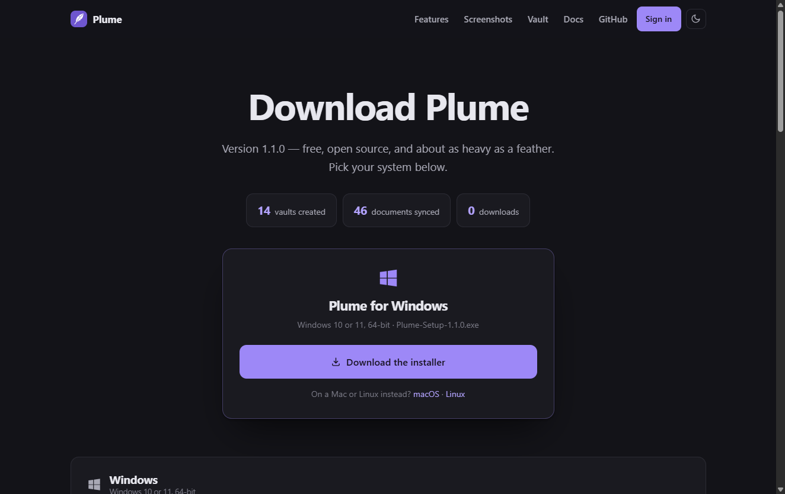
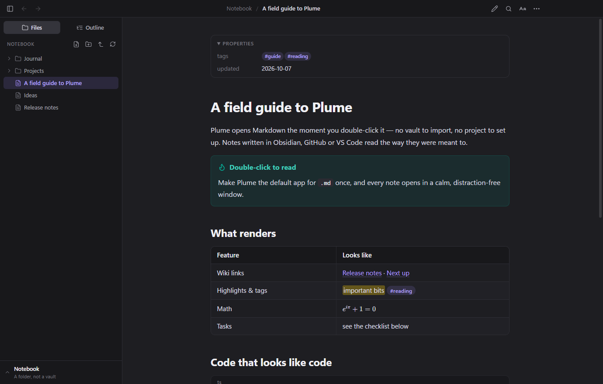
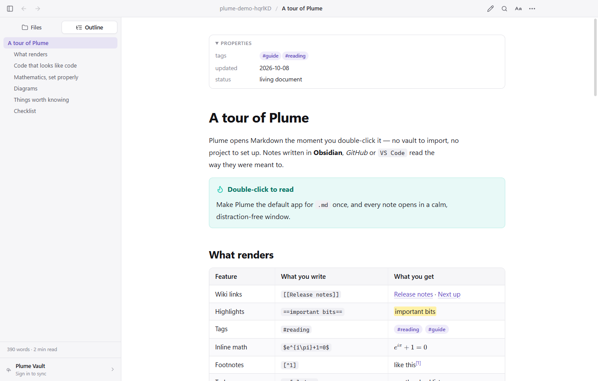
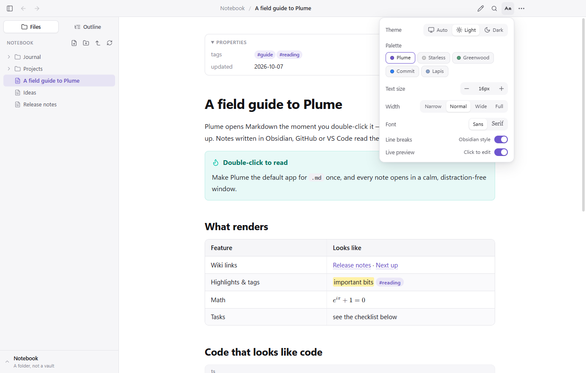
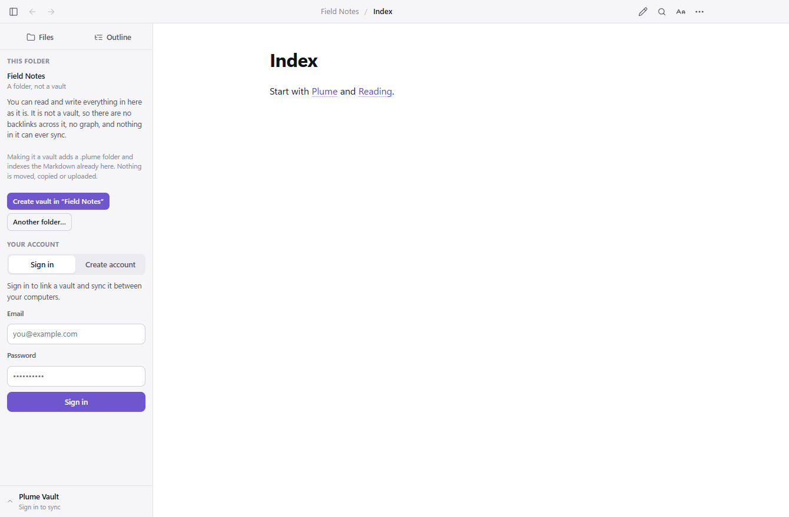
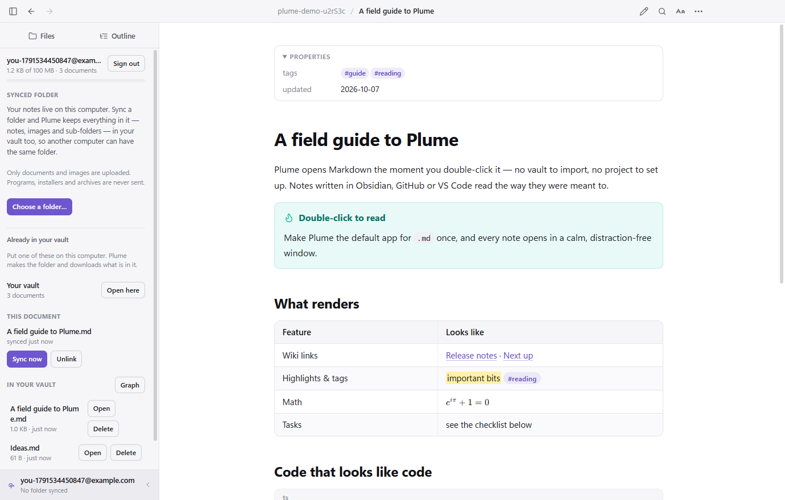
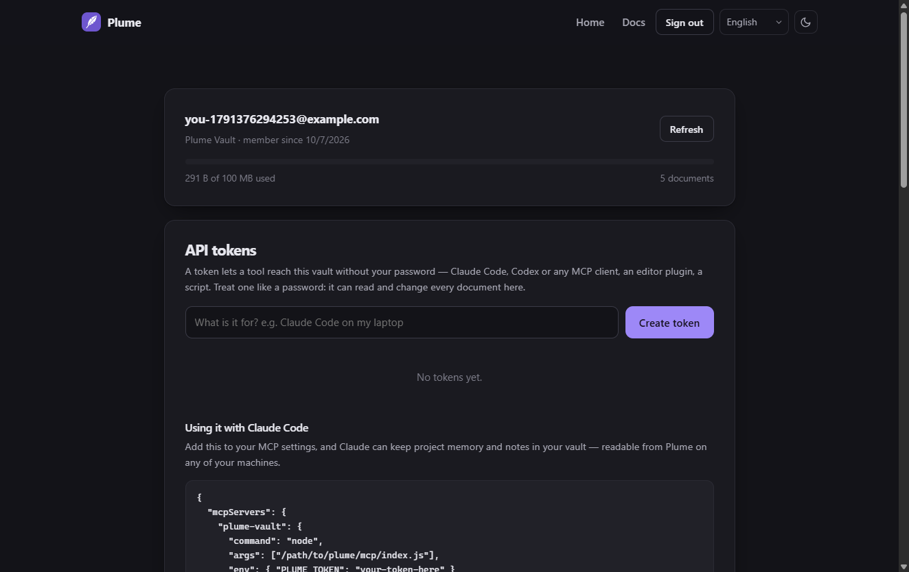
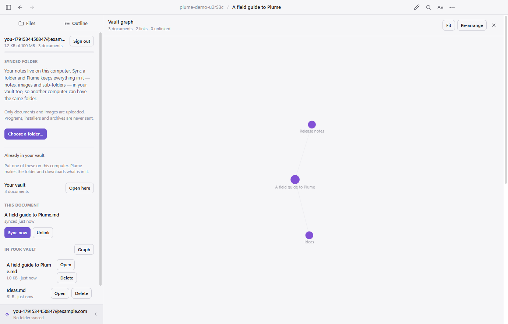
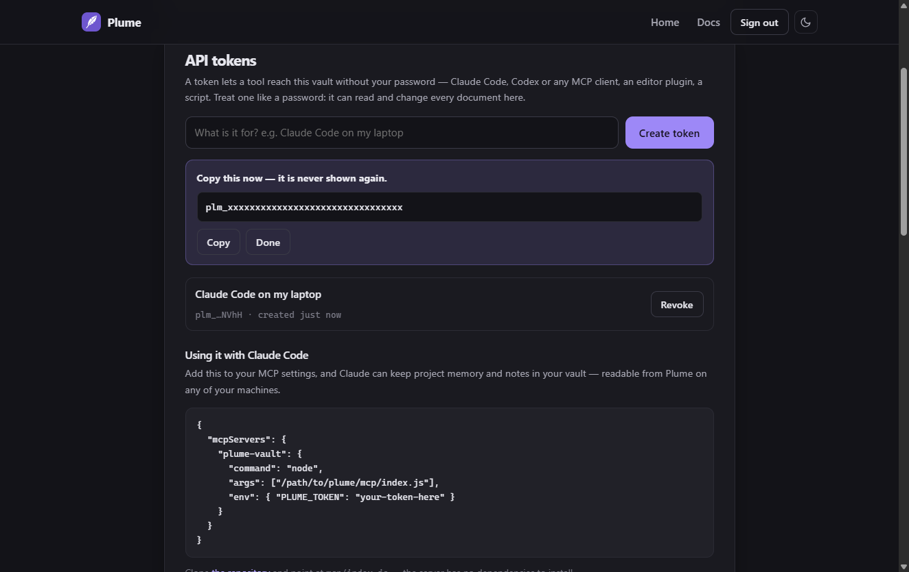
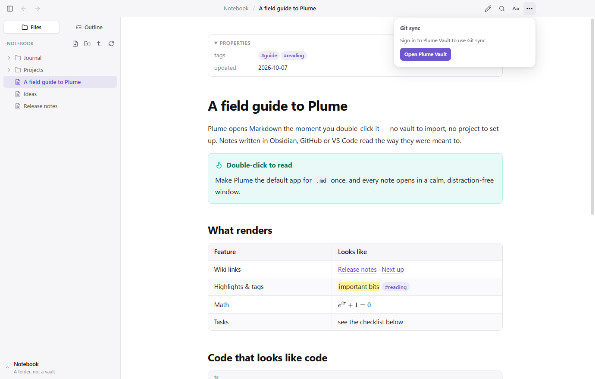

Documentation
Plume is a Markdown reader. Everything below the first section is optional — the app works fully with no account at all.
Getting started
- Install it. Pick your system on the download page. The builds are not code-signed yet, so Windows and macOS warn on first run; the download page explains how to get past that for each system.
- Open a document. Double-click any
.mdfile, drag one onto the window, or pressCtrl+O. - Make it the default if you want every Markdown file to open here. Windows and macOS only let you choose that yourself — see Troubleshooting.
That is the whole app. No vault to create, no project to open, no account.

Reading documents
Plume opens one document per window. Opening a second file while Plume is running gives it its own window instantly, with no cold start.
- Open a folder of notes from the welcome screen, or ⋯ → Open folder…, and the sidebar roots itself there and stays there — opening a note inside it reveals the file in the tree instead of re-rooting on the note's own folder. Plume remembers the folder, so it is waiting next time; Close folder lets it go.
- The sidebar has two tabs — Files (the folder around your document, or the whole vault if it is in one) and Outline (every heading, with a reading time) — and the Plume Vault bar at its foot. Toggle the sidebar with
Ctrl+\. - Reading settings (the
Aabutton) set the theme, the colour palette, text size, reading width, serif or sans, whether a click edits a paragraph (live preview), and whether a single newline is a line break. - Live reload: save the file in any editor and Plume updates in place, keeping your scroll position. Write in your editor, read here.
- Find in page with
Ctrl+F; back and forward between linked notes withAlt+←andAlt+→, or your mouse side buttons. - Print and Export as PDF from the
⋯menu. PDFs get a real outline built from your headings, and diagrams are redrawn in the light theme for paper.



Themes & palettes
Two settings, and they do different jobs. Theme is Auto, Light or Dark — Auto
follows your system. Palette recolours whichever of light or dark is in force, so
Auto keeps following the system inside every palette rather than being replaced by it.
Both live under Reading settings (the Aa button).

- Plume — the one it ships with: a violet accent on a neutral ground.
- Starless — a monochrome interface on true black. Code keeps its syntax colours, because those carry meaning.
- Greenwood — warm forest greens on a soft, low-contrast ground.
- Commit — the palette a diff is usually read in.
- Lapis — deep blue stone, with a navy accent rather than a bright one.
The same five are on this website and the web vault, in the footer, and your choice is remembered per device.
The four beyond Plume’s own are derived from Void, Everforest Enchanted, GitHub Flavored Markdown and Sodalite — Obsidian community themes, each MIT licensed. The CSS is Plume’s and the names are different so neither is mistaken for the other. Void and Sodalite are dark-only upstream; their light sides are built here from the same hues. Where a borrowed colour was not readable enough it was adjusted: every palette clears 3:1 contrast for body text, links and accents in both modes.
Obsidian notes
Plume reads the Obsidian dialect, so you can open a vault note without opening the vault:
| What you write | What Plume does |
|---|---|
[[Note]] | Links to it anywhere in the vault, ignoring letter case |
[[Note#Heading|alias]] | Jumps to that heading, shown as the alias |
![[image.png|300]] | Embeds the image at that width |
![[Note#Section]] | Pulls that section in |
> [!tip] | A callout; [!warning]- is foldable |
==highlight== | Highlights it |
#tag, %%comment%%, ^block-id | Tags, hidden comments, block references |
| Front matter | Shown as Properties at the top |
GitHub-flavoured Markdown works too: tables, task lists, footnotes, definition lists, emoji shortcodes, syntax highlighting, KaTeX maths and Mermaid diagrams.
For a note inside a real Obsidian vault, ⋯ → Open in Obsidian hands it over.
Plume Vault
A vault is 100 MB of storage attached to an account. It is free — there is no card, no trial and no paid tier — and it is entirely optional.
To create one, either:
- In Plume, open the Plume Vault bar at the foot of the sidebar, choose Create account, and enter an email and a password; or
- On the web at plume-md.com/app.html.
Either way it is the same vault. A password needs at least 10 characters with a number or a symbol in it.

Syncing
There are two ways to get a document into your vault. A synced folder keeps itself up to date and is what most people want; syncing one document is there for notes that live outside that folder.
A synced folder
Open the Plume Vault bar at the foot of the sidebar and sign in. The folder you already have open becomes your vault — there is nothing else to choose. From then on the folder and the vault are the same notebook: what you write here goes up, what was written on another computer or in the web vault comes down, and a document deleted on one side goes on the other.
Opening a single file on its own never syncs anything. A vault is a folder.
- Both ways, by itself. Plume watches the folder while it is open and checks again every few minutes, so an edit made in any editor, on any of your computers, reaches the others without being asked.
- Nothing is destroyed to settle a disagreement. If the same note was edited here and somewhere else before they met, both are kept: yours stays where it is and the vault's copy is saved beside it as
note (vault copy …).md. An edit always beats a delete. - A delete that arrives from elsewhere is recoverable. The document is moved into a hidden
.plume-trashfolder inside your folder, not erased. - Folders are kept.
Projects/Plume.mdarrives asProjects/Plume.md, so two notes calledREADMEin different folders never collide. - Only documents and images are uploaded. Markdown, text, CSV, JSON, YAML, and PNG, JPEG, GIF, WebP and AVIF images. Programs, installers, archives and anything else are refused by an allow-list and stay on your computer.
- It watches while Plume is open and checks again every few minutes, so edits made in any editor go up on their own.
- Pause it at any time, or Stop syncing the folder. Stopping deletes nothing: the folder stays on your computer and what is already in the vault stays in the vault.
- Up to 2000 documents and 10 MB per file. Hidden folders,
node_modulesand the like are skipped.
More than one notebook
A vault holds as many notebooks as you have projects. Each folder you sync takes a folder of its own inside the vault, named after itself, so choosing a different folder adds a second notebook rather than merging two into one — and the one you stopped syncing is still there, under its name.
- Three projects, three folders. Open one and it is the vault; open another and that one is, each keeping its own notebook in the cloud.
- On another computer, sign in and the vault panel lists the notebooks you already have. Press Open here, say where it should go, and Plume makes the folder and downloads what is in it. That folder is then your vault on that machine, syncing both ways like any other.
One document at a time
- Open the document you want.
- Open the Plume Vault bar. Under This document, check the name it will take in the vault and press Sync to vault.
- That document is now linked: the panel shows when it last synced, and Sync now sends your latest version up.
- On another computer, sign in, find it under In your vault and press Open. Plume asks where to save it, then opens it — and links it there too.
The name offered is the path from the folder shown in the sidebar, not just the file name, for the same reason: so nothing collides. If something already in the vault uses that name, Plume says so before replacing it.

When the same document changes in two places
Every upload carries the revision this machine last saw. If the vault copy has moved on since then — because you edited it on your laptop — Plume refuses the upload rather than flattening that work, and asks what to keep:
- Save the vault copy beside mine downloads the other version next to your file as
Note (vault copy 2026-10-07-14-30).md, so you have both and can merge them yourself. - Replace the vault copy sends yours up and overwrites the other one. Only pick this when you know yours is the one you want.
The web vault
plume-md.com/app.html shows the same documents in a browser: read them, download them, drop new ones in, and delete them. Useful on a machine where Plume is not installed.

The graph
The Graph button in the vault panel draws how your documents link to each other — wiki links, embeds and ordinary Markdown links all count; links inside code blocks do not.
- Drag a document to move it, scroll to zoom, drag the background to pan.
- Hover one to dim everything it is not connected to.
- Double-click to open it.
- Bigger circles have more links. Colours group documents by folder.

API tokens
A token lets something that is not a browser reach your vault: an AI assistant, an editor plugin, a script. Create one on the web vault under API tokens, give it a name you will recognise later, and copy it — it is shown once and never again, because only its hash is stored.

Used directly, the API is ordinary HTTP:
curl https://plume-md.com/api/vault/list \
-H "Authorization: Bearer plm_your_token"
curl -X PUT "https://plume-md.com/api/vault/file?path=notes/today.md" \
-H "Authorization: Bearer plm_your_token" \
--data-binary @today.mdClaude Code, Codex and MCP
Plume Vault ships an MCP server, so an AI assistant can keep project memory, decisions and notes somewhere that outlives the session — and that you can read in Plume on any of your machines afterwards.
Create a token, then add this to your MCP client's configuration:
{
"mcpServers": {
"plume-vault": {
"command": "node",
"args": ["/path/to/plume/mcp/index.js"],
"env": { "PLUME_TOKEN": "plm_your_token" }
}
}
}
Clone the repository and point
args at mcp/index.js inside it. There is nothing to install:
the server has no dependencies. Once it is published to npm you will be able to use
npx -y @plume-md/vault-mcp instead.
The assistant gets eight tools:
| Tool | Does |
|---|---|
list_notes | Lists what is in the vault, optionally under one folder |
read_note | Reads one document |
write_note | Creates or replaces one |
append_note | Adds to the end — safer than replacing, for a running log |
search_notes | Searches the text of every document and returns matching lines |
delete_note | Removes one |
vault_graph | Shows the links, including ones pointing at documents that do not exist yet |
vault_status | How much storage is used |
A shape that works well
Keep one folder per project and let the assistant write to it, exactly as you would with a notes repository:
projects/plume/decisions.md why things are the way they are
projects/plume/architecture.md how it fits together
projects/plume/log.md appended to as work happens
people/notes.md who said what, and when
Write the links in [[double brackets]] and the vault graph draws the shape of
what the assistant has remembered.
Editing
Click a paragraph. It becomes editable right where it sits, while everything else on the page stays rendered, so nothing moves under you. Type, click somewhere else, and it is a paragraph again. That is live preview, and it is on unless you turn it off in Reading settings → Live preview.
The markers get out of the way. Inside the paragraph you are editing,
**bold** reads as bold — until you put the caret in the word, and the
stars are back to be edited. Move away and they go again. The same for italics,
strikethrough, inline code, links, images and headings, so you read the paragraph as it will
be while you are still writing Markdown into the same file. A heading reveals its
# when the caret is in the # itself, which is where you change its
level.
For the whole file as plain text, press the pencil in the toolbar or Ctrl+E.
Both write into the same text, so you can move between them mid-sentence without losing
anything, and the rendered document always shows what you have typed — saved or not.
There is no hidden formatting model between what you type and what is saved.
Ctrl+Ssaves, wherever you are typing.Escgoes back to reading and keeps what you typed.- A block opens whole. A list, a table or a code block is edited as the one thing it is. Diagrams, maths and images stay rendered — a click on those does nothing, so a stray click cannot replace a diagram with its source.
- Arrow keys carry on into the next block, as though the whole document were one editor. Clicking past the end of the document starts a new paragraph there.
- Tab indents and Shift+Tab outdents, across a whole selection.
- Enter continues a list — bullets, numbers and task boxes — and ends it when you press Enter on an empty item.
- Selecting text does not start an edit, so you can still read with the mouse. Links still follow on a click.
Ctrl+Shift+Estill hands the file to VS Code, Cursor or your system editor.
What it will not do to your work
- Nothing is written until you ask. Typing changes nothing on disk.
- Only the lines you edited are rewritten. Editing one paragraph replaces that paragraph's own lines and passes the rest of the file through exactly as it was — including anything Plume does not render.
- Unsaved work is never dropped silently. A dot appears beside the file name while there are unsaved changes. Going back to reading keeps them; moving to another document, or re-reading the file from disk, asks first.
- A file changed elsewhere cannot overwrite you. If something else writes to the document while you are editing it — another editor, or a sync from another machine — Plume stops, tells you, and lets you choose which version to keep.
- Saving does not fight live reload. Plume recognises its own write, so the editor is not reloaded out from under you.
Git sync
Keep a folder of notes in a Git repository: pull what changed elsewhere, commit what changed here, push. It is in ⋯ → Git sync…, and it is part of having a Plume Vault account.

- Open ⋯ → Git sync… and choose the folder your notes are in.
- Paste the repository address —
https://github.com/you/notes.gitorgit@github.com:you/notes.git— and press Connect. An empty folder is cloned into; a folder that already has notes in it keeps them and gains a remote. - Press Sync now. Plume commits what changed, rebases on whatever arrived, and pushes.
Plume never asks for a token, and never stores one. It drives the git
already on your machine, so your credentials stay where you already put them — the system
credential helper, an SSH agent, a deploy key. That is also why conflicts, submodules, LFS,
hooks and commit signing all behave exactly as they do in your terminal: it is the same git.
The one requirement is that Git is installed; the panel says so plainly if it is not.
It rebases rather than merges, so a folder of notes does not collect a merge commit every few minutes. If the two sides genuinely conflict, Plume stops and tells you — resolve it in the folder the way you normally would, then sync again. A repository left half-way through somebody else's merge or rebase is never touched.
Git sync and vault sync can point at the same folder. Neither knows about the other, and neither needs to: one keeps a copy in your vault, the other keeps a history in your repository.
If Git has no name and email configured — common if you set them per repository rather than globally — Plume gives a repository it created an identity from your vault account, so the first commit does not fail. It never changes your global configuration, and never overwrites an identity that is already there.
Updates
Plume looks for a newer release shortly after it starts and offers it in a bar at the top of the window. Nothing is downloaded until you press Install, and nothing is installed without you asking. Not now means not again for that version.
SHA256SUMS.txt alongside the installers. Plume downloads the installer, hashes it,
and compares it against that file before letting it run — a download that does not match is
deleted rather than executed. It will also only ever download from this project's own release
URLs, over HTTPS.
On macOS and Linux the bar offers the download page instead of installing: an unsigned macOS app is not allowed to replace itself, and Linux packages belong to your package manager.
Keyboard
On macOS, use ⌘ in place of Ctrl and ⌥ in place of Alt.
| Action | Keys |
|---|---|
| Open file | Ctrl+O |
| New window | Ctrl+N |
| Close window | Ctrl+W |
| Find / next / previous | Ctrl+F, Enter, Shift+Enter |
| Back / forward | Alt+← / Alt+→ |
| Toggle sidebar | Ctrl+\ |
| Text size | Ctrl+= / Ctrl+- / Ctrl+0 |
| Reload | F5 |
| Edit one block, where it is | click it |
| Edit the whole file as text | Ctrl+E |
| Save | Ctrl+S |
| Open in your editor | Ctrl+Shift+E |
Ctrl+P | |
| Full screen | F11 |
Privacy and safety
- Without an account, nothing leaves your computer. Plume has no telemetry and makes no network requests while reading a file.
- Markdown is untrusted input. Documents are rendered in a sandboxed window with a strict Content-Security-Policy, sanitised with DOMPurify. Scripts never run, external links open in your browser, and links to programs, apps and scripts are only ever revealed in your file manager — never launched. A document cannot make Plume load files from other computers on your network.
- Account tokens never reach the window that renders your documents. Every network call happens in Plume's main process, so even a flaw in the renderer could not read one.
- Passwords are hashed with scrypt and never stored or logged in the clear. Your session token is kept encrypted at rest using your system keychain.
- Vault documents sit in private storage that nobody else can list. They are not indexed, shared or sold.
- Changing your password signs out every other device.
Troubleshooting
Windows warns that it protected my PC
The build is not code-signed yet. Choose More info → Run anyway. Every build is produced in public by GitHub Actions from the tagged source, so you can check what went into it.
macOS will not open it
Plume is not notarized yet. Right-click it in Applications → Open → Open. On macOS 15 and later, try once, then go to System Settings → Privacy & Security and click Open Anyway. Or run xattr -cr /Applications/Plume.app.
Making Plume the default for .md
- Windows: right-click a Markdown file → Open with → Choose another app → Plume → Always. Or use
⋯ → Make Plume the default for .mdinside Plume. - macOS: select a
.mdfile in Finder → Get Info → Open with: Plume → Change All… - Linux: choose Plume under Open With in your file manager and set it as the default.
Linux: it will not start on Ubuntu 24.04
Use the .deb rather than the AppImage — it installs the AppArmor profile Electron apps need there.
"Your session expired"
Sessions last 14 days. Sign in again from the Plume Vault bar. Changing your password ends every session on purpose.
Something is wrong
Open an issue on GitHub with your system and what you were doing. Plume is MIT-licensed and the source is all there.